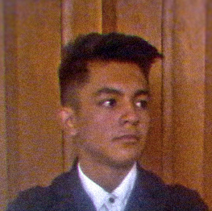

Enmanuel Ferrer
Informático
Resumen curricular
Soy un programador con 8 meses de experiencia en Ascardio como Técnico en Redes y Telecomunicaciones que ha participado en varias actividades dentro de la
institución referentes a la computación. Tengo conocimiento en múltiples campos de la informática obtenido con cursos realizados por internet, investigación
y práctica, soy capaz de trabajar en equipo, así como soy muy dado a enseñar lo que sé a los demás, puedo trabajar bajo presión y cargar con grandes
responsabilidades.
Datos personales
- Nombre: Enmanuel José Ferrer Escalona
- Edad: 21 años
- Cédula: V-28.406.264
- Estado civil: Soltero
- Fecha de nacimiento: 25 nov 2000
- Dirección: Calle 1, esquina de la carrera 3, cerca de Urb. José Gil Fortul y La Cruz, Barquisimeto 3001, Lara.
- Celular: +58 414-5047601
- E-Mail: enmanuelferrer2511@gmail.com
- Celular: +58 414-5047601
- E-Mail: enmanuelferrer2511@gmail.com
Experiencia laboral
Trabajé 9 meses como Técnico en Redes y Telecomunicaciones en la Unidad de Sistemas de Ascardio dando al mismo tiempo apoyo al área de Servicio Técnico.
Durante mis 9 meses en la empresa estuve haciendo lo que se muestra en el siguiente listado.
- Encargado del área del Redes.
- Monitoreo de servidores, red LAN y red Wifi.
- Instalación de switches y cableado de red UTP y Fibra óptica.
- Encargado del área de telefonía.
- Revisión, reparación e instalación del cableado y aparatos telefónicos.
- Supervisión del área de Servicio Técnico.
- Mantenimiento y reparación de computadoras.
- Asesoría remota para problemas con software (programas), computadoras, impresoras y teléfonos.
Participación en actividades de la institución
Estando en Ascardio pude formar parte de actividades muy importantes para la institución dado mis conocimientos y capacidad de adaptabilidad, lo cual generó
una gran confianza en mí a nivel de la institución.
-
Encargado de la videoconferencia y controles de equipos de sonido durante el evento conmemorativo del 10 aniversario de la Fundación Venezolana del
Corazón.
- Apoyo en la instalación de la red de fibra óptica para el proyecto de CCTV 2021-2022 junto al equipo de Cica electronics, Grupo Intec y FiberNet Venezuela.
-
Soporte técnico, monitoreo y asesorías durante la transmisión en vivo realizada por Streaming Squad en conjunto con Fabri Eventos de la Jornada Académica
2022 organizada por Mundo Anatómico, Redvital y Ascardio.
- Edición de videos grabados durante la Jornada Académica 2022 para su posterior utilización en el ámbito educativo a nivel de medicina.
Grado de Instrucción
- Bachiller en ciencias egresado del Colegio Monseñor Aguedo Felipe Alvarado (AFA).
- Tres semestres aprobados en la carrera de Informática del Instituto Universitario Jesús Obrero (IUJO).
Aptitudes
- Informática.
- Programación.
- Edición y producción audiovisual.
- Diseño gráfico.
- Ilustración digital.
- Servicio técnico y reparación de computadoras.
- Redes de computadores.
- Telefonía.
- Inglés.
Conocimientos
- Programación en C++, Python, Java, JavaScript.
- Desarrollo y diseño WEB con HTML, CSS y JavaScript.
- Uso básico de MySQL para manejo de bases de datos.
- Uso básico de Git y GitHub para el control de versiones de proyectos.
- Uso básico de Blender para diseño 3D.
- Edición de imagen con Photoshop.
- Edición de video con Vegas, Premiere PRO y After Effects.
- Edición de audio con Audacity y Audition.
- Diseño gráfico con Illustrator.
- Ilustración digital con PaintTool SAI y SketchBook.
- Producción de pistas de audio básicas con FL Studio.
- Instalación y reparación cable de redes (UTP y Fibra óptica).
- Instalación y reparación cable de telefonía.
Cursos realizados
Cursos presenciales
- Deseño y desarrollo WEB con HTML, CSS, Bootstrap.CSS y JavaScript.
- Introducción a C#.
- Introducción a ReactJS.
Cursos de internet sin certificado
- Curso básico de HTML, CSS y JavaScript.
- Programación en C++.
- Programación en Python.
- Programación en Java.
- Uso de bases de datos MySQL con Python.
- Uso de Java y MySQL.
- Uso de Bootstrap.CSS.
- Uso básico de WordPress.
- Python para principiantes.
- Conceptos básicos del diseño gráfico.
- HTML desde cero.
- Git y GitHub.
- MySQL para principiantes.
- Curso Full React.
- Materialize CSS.
- Adobe Illustrator: Sé un experto en ilustración digital.